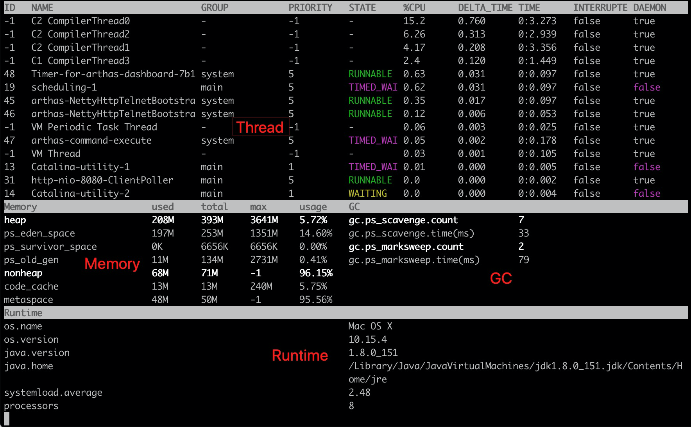

dashboard¶
当前系统的实时数据面板，按 ctrl+c 退出。
当运行在Ali-tomcat时，会显示当前tomcat的实时信息，如HTTP请求的qps, rt, 错误数, 线程池信息等等。
使用参考¶
$ dashboard
ID NAME GROUP PRIORITY STATE %CPU TIME INTERRUPTED DAEMON
889 RMI TCP Connection(15)-30.10.166. RMI Runtime 9 RUNNABLE 48 0:5 false true
1077 Timer-for-arthas-dashboard-0 system 9 RUNNABLE 24 0:0 false true
1074 as-selector-daemon system 9 RUNNABLE 12 0:0 false true
284 JMX server connection timeout 284 RMI Runtime 9 TIMED_WAITI 8 0:3 false true
16 Timer-1 main 5 TIMED_WAITI 5 0:9 false true
47 Pandora pandora-qos-reporter Pool main 5 TIMED_WAITI 0 0:0 false true
48 JmonitorClient-CheckThread Pool [ main 5 TIMED_WAITI 0 0:0 false true
49 JmonitorClient-HeartBeat Pool [Th main 5 TIMED_WAITI 0 0:0 false true
50 JmonitorClient-ReaderThread Pool main 5 TIMED_WAITI 0 0:0 false true
957 RMI TCP Connection(16)-30.10.166. RMI Runtime 9 RUNNABLE 0 0:2 false true
51 JmonitorClient-WriterThread Pool main 5 TIMED_WAITI 0 0:0 false true
52 ContainerBackgroundProcessor[Stan main 5 TIMED_WAITI 0 0:0 false true
53 http-bio-8080-Acceptor-0 main 5 RUNNABLE 0 0:2 false true
54 http-bio-8080-AsyncTimeout main 5 TIMED_WAITI 0 0:0 false true
11 GC Daemon system 2 TIMED_WAITI 0 0:0 false true
Memory used total max usage GC
heap 59M 223M 1820M 3.26% gc.ps_scavenge.count 118
ps_eden_space 14M 114M 668M 2.11% gc.ps_scavenge.time(ms) 1890
ps_survivor_space 6M 6M 6M 96.08% gc.ps_marksweep.count 5
ps_old_gen 39M 103M 1365M 2.86% gc.ps_marksweep.time(ms) 1140
nonheap 234M 240M 0M 97.46%
code_cache 46M 47M 240M 19.49%
metaspace 167M 172M 0M 97.36%
Runtime Tomcat
os.name Mac OS X connector http-bio-8080
os.version 10.10.5 QPS 0.00
java.version 1.8.0_60 RT(ms) 1.13
java.home error/s 0.00
received/s 0B
systemload.average 3.44 sent/s 0B
processors 4 threadpool http-bio-8080
uptime 16020s busy 0
数据说明¶
ID: Java级别的线程ID，注意这个ID不能跟jstack中的nativeID一一对应
NAME: 线程名
GROUP: 线程组名
PRIORITY: 线程优先级, 1~10之间的数字，越大表示优先级越高
STATE: 线程的状态
CPU%: 线程消耗的cpu占比，采样100ms，将所有线程在这100ms内的cpu使用量求和，再算出每个线程的cpu使用占比。
TIME: 线程运行总时间，数据格式为
分：秒INTERRUPTED: 线程当前的中断位状态
DAEMON: 是否是daemon线程
截图展示¶
